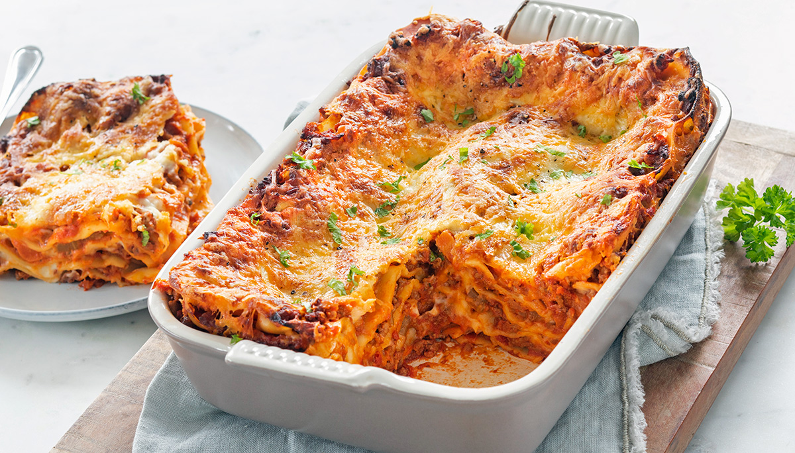

Jambalaya

Recipe description
Its time for some Lasagne
Ingredients
- 12 lasagne sheets
- 500g ground beef
- 150g pancetta or bacon, diced
- 1 onion, finely diced
- 2 carrots, finely diced
- 2 celery stalks, finely diced
- 3 garlic cloves, minced
- 400g canned crushed tomatoes
- 2 tbsp tomato paste
- 150ml red wine
- 200ml whole milk
- 500ml béchamel sauce
- 100g Parmesan, grated
- 2 tbsp olive oil
- Salt and pepper to taste
Instructions
- Heat olive oil in a large pan over medium heat. Fry the pancetta for 2–3 minutes, then add onion, carrot, celery, and garlic. Cook for 5 minutes until softened.
- Add the ground beef and cook until browned, breaking it up as you go.
- Pour in the red wine and let it simmer for 2 minutes until mostly evaporated.
- Add the crushed tomatoes, tomato paste, and milk. Season with salt and pepper. Simmer on low heat for 45 minutes, stirring occasionally.
- Preheat the oven to 190°C (375°F). Spread a thin layer of bolognese on the bottom of a baking dish.
- Layer lasagne sheets, bolognese, béchamel, and Parmesan. Repeat until all ingredients are used, finishing with a layer of béchamel and Parmesan on top.
- Cover with foil and bake for 30 minutes, then remove the foil and bake for another 15 minutes until golden and bubbling.
- Let rest for 10 minutes before slicing and serving.